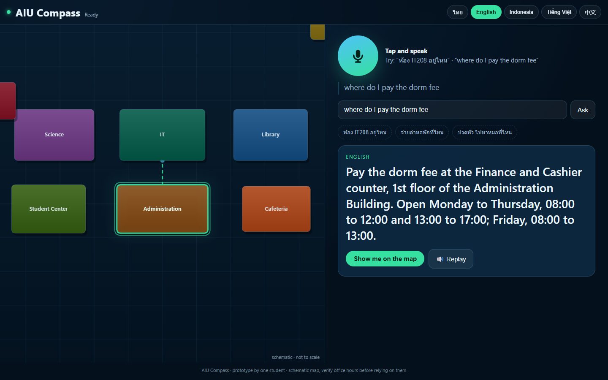
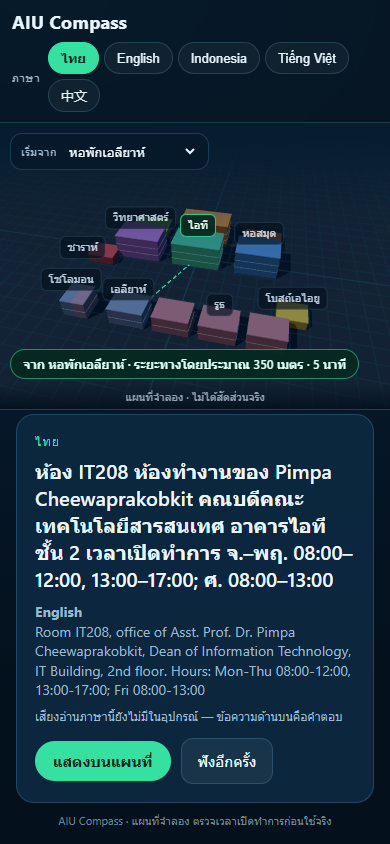

AIU hosts students from more than 40 countries. The same conversation fails every week at the registrar, the clinic, the dorm office and the cafeteria: a student knows what they need, but not the room, the office or the hours — and not in the language the counter speaks.
Evidence being collected: a short class survey on translation trouble at the counters. Counts are recorded on the day, not asserted here.
| Test on five campus questions | General translator | AIU Compass |
|---|---|---|
| Room code (IT208) | fails | resolves |
| Office name (Registrar / ทะเบียน) | literal | resolves |
| Hours for that office | no data | from campus record |
| Where to walk | no map | routes on map |
| Works with no connection | no | 33-question pack |
Evaluation protocol: five campus questions, scored for room, office, hours, route and offline availability. Results are recorded on the day and shown on the handout — no number is printed here until it is measured.
Office hours were confirmed on 25 November and cafeteria, clinic and church hours on 26 November; library and gym hours remain placeholders, and the app labels any unverified hours.
All five languages are covered by the answer and offline layers, which are under automated test. Live speech input and the spoken voice depend on the device: the included probe page checks both in about a minute, and the result is recorded before the demo. Adding a sixth means one configuration entry plus 33 translated answers.
Browser only. Speech recognition from the browser's own engine, a reasoning model for the sentence, on-device speech for the answer, and a hand-built campus record of 33 places across 14 buildings.
Cost: 0 baht to run. A kiosk tablet is about 3,000 baht, one time.
Privacy: no audio is stored, no faces, no accounts. In offline mode nothing leaves the device.
Limitations, stated plainly: live answers need a connection; the offline pack covers 33 counter questions; the 3D map is illustrative, not survey-accurate.
Tested before printing: 48 automated checks of the vocabulary layer, the campus data and the five-language copy, 23 checks in the browser, the offline cache, and the fallback when the network or the microphone fails.
Not yet proven: the five-question comparison and speech on the specific demo phone — each has a named check and a blank result.
Four-week pilot at one counter — the registrar or the clinic — measured by time-to-serve and repeat questions.
Then IPITEx 2027, Class G (ICT), and the same campus record extended to every faculty building.


Asked in Thai: “ห้อง IT208 อยู่ไหน”. Answered in Thai from the cached pack in single-digit milliseconds (median 6 ms over five runs), with the English line, the room code, the hours, and the IT Building highlighted on the map.
Same build, same URL, no app installed. Screenshots taken from the submitted version.